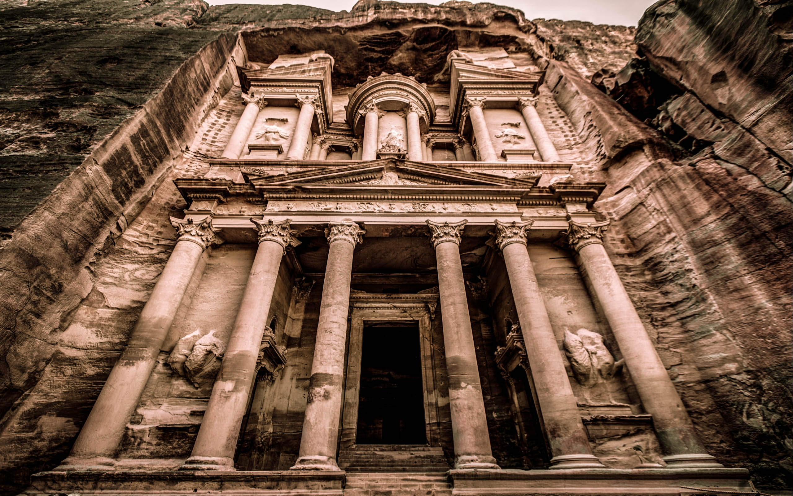
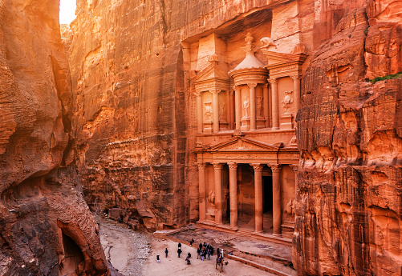

Petra (Arabic: ٱلْبَتْرَاء, romanized: Al-Batrāʾ; Ancient Greek: Πέτρα, "Rock"), originally known to its inhabitants as Raqmu or Raqēmō is a historic and archaeological city in southern Jordan. It is adjacent to the mountain of Jabal Al-Madbah, in a basin surrounded by mountains forming the eastern flank of the Arabah valley running from the Dead Sea to the Gulf of Aqaba. The area around Petra has been inhabited from as early as 7000 BC, and the Nabataeans might have settled in what would become the capital city of their kingdom as early as the 4th century BC. Archaeological work has only discovered evidence of Nabataean presence dating back to the second century BC, by which time Petra had become their capital. The Nabataeans were nomadic Arabs who invested in Petra's proximity to the incense trade routes by establishing it as a major regional trading hub.
One of the main things that Petra is known for is its Hellenistic architecture. The facades of the tombs in Petra display this type of architecture and it also grants reflection on the different types of cultures that the Nabataens traded with. Most of these contain small burials and niches that are carved into the stone.[21] Perhaps a more prominent resemblance to the Hellenistic style comes with its Treasury, which is 24 meters (79 ft) wide and 37 meters (121 ft) tall and gives reference to the architecture of Alexandria.[22] The facade of the Treasury features a broken pediment with a central tholos inside, and two obelisks appear to form into the rock at the top. Near the bottom of the Treasury there are twin Greek gods Castor and Pollux, who protect travellers on their journeys. Near the top of the Treasury, two victories are seen standing on each side of a female figure on the tholos. This female figure is believed to be the Isis-Tyche, Isis being the Egyptian goddess and Tyche being the Greek goddess of good fortune.[21] Another prime example of the Hellenistic architecture featured in Petra is in its Monastery, which stands at 45 meters (148 ft) tall and 50 meters (160 ft) wide, this is Petra's largest monument and is another building carved into the rocks of Petra. The facade of this again features a broken pediment, similar to the Treasury, as well as another central tholos. The Monastery displays more Nabataen touch while at the same time incorporating elements from Greek architecture.[21] Its only source of light is its entrance standing at 8 meters (26 ft) high. There is a large space outside of the Monastery, which is purposefully flattened for worship purposes. Formerly, in the Byzantine period, this was a place for Christian worship, but is now is a holy sight for pilgrims to visit.
Pliny the Elder and other writers identify Petra as the capital of the Nabataean Kingdom and the centre of their caravan trade. Enclosed by towering rocks and watered by a perennial stream, Petra not only possessed the advantages of a fortress, but controlled the main commercial routes which passed through it to Gaza in the west, to Bosra and Damascus in the north, to Aqaba and Leuce Come on the Red Sea, and across the desert to the Persian Gulf.
| Pictures | |
|---|---|
 |
 |
|  | |
| Videos | |